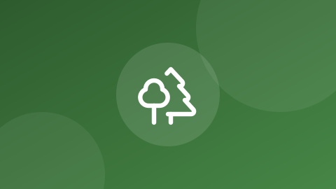
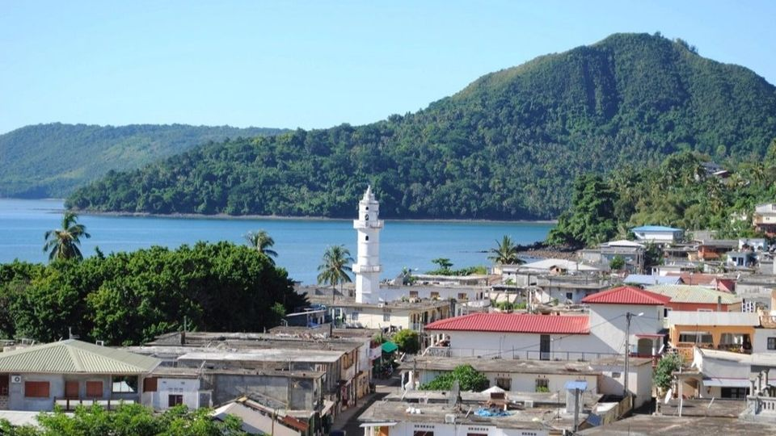

Se préparer en outre-mer : les risques et le kit, territoire par territoire
Cyclones, séismes, volcans, fortes pluies, coupures d'eau : les risques ne sont pas les mêmes d'un territoire à l'autre. Choisissez le vôtre pour connaître ses risques, ce qui change dans le kit 72 h et les sites officiels d'alerte.

Informations pratiques, sources officielles (guide « Tous responsables » (SGDSN, 2025) et sites officiels). Elles ne remplacent pas les consignes des autorités. En cas d'urgence, appelez le 112 et suivez les consignes de la préfecture, de la radio et de FR-Alert.
Tous les guides : préparation outre-mer
Cyclones, séismes, volcans : ce qui change dans le kit selon votre territoire.
 GuadeloupeKit 72 h adapté à la Guadeloupe : cyclones de juin à novembre, séismes, La Soufrière, inondations. Risques, contenu du kit et sites d'alerte officiels.
GuadeloupeKit 72 h adapté à la Guadeloupe : cyclones de juin à novembre, séismes, La Soufrière, inondations. Risques, contenu du kit et sites d'alerte officiels. MartiniqueKit 72 h pour la Martinique : saison cyclonique de juin à novembre, séismes, Montagne Pelée, inondations. Risques vérifiés, contenu spécifique, alertes officielles.
MartiniqueKit 72 h pour la Martinique : saison cyclonique de juin à novembre, séismes, Montagne Pelée, inondations. Risques vérifiés, contenu spécifique, alertes officielles.
GuyaneKit d'urgence 72 h en Guyane : fortes pluies, inondations, coupures d'eau et d'électricité. Les risques du territoire, le contenu du kit et les alertes officielles. La RéunionKit 72 h à La Réunion : saison cyclonique de novembre à avril, Piton de la Fournaise, séismes, inondations. Risques, contenu du kit et canaux d'alerte officiels.
La RéunionKit 72 h à La Réunion : saison cyclonique de novembre à avril, Piton de la Fournaise, séismes, inondations. Risques, contenu du kit et canaux d'alerte officiels.
MayotteKit 72 h à Mayotte : cyclones violents comme Chido en 2024, séismes, pénurie d'eau chronique. Risques, contenu du kit et canaux d'alerte officiels. Saint-Martin et Saint-BarthélemyKit d'urgence 72 h pour Saint-Martin et Saint-Barthélemy : cyclones violents (Irma 2017), séismes, tsunamis, eau. Risques, contenu du kit et canaux officiels.
Saint-Martin et Saint-BarthélemyKit d'urgence 72 h pour Saint-Martin et Saint-Barthélemy : cyclones violents (Irma 2017), séismes, tsunamis, eau. Risques, contenu du kit et canaux officiels.Questions fréquentes
Quand se termine la saison cyclonique aux Antilles ?
Elle va du 1er juin au 30 novembre selon Météo-France. Préparez votre kit avant le début de la saison.
Faut-il plus d'eau en outre-mer ?
Le minimum reste 6 litres par personne pour 72 heures ; prévoyez davantage par forte chaleur et là où les coupures d'eau sont fréquentes.
À lire aussi
 Test : suis-je prêt ?10 questions pour savoir si votre foyer est prêt à tenir 72 heures : eau, nourriture, santé, papiers, alerte. Score immédiat et 3 actions prioritaires, gratuit.
Test : suis-je prêt ?10 questions pour savoir si votre foyer est prêt à tenir 72 heures : eau, nourriture, santé, papiers, alerte. Score immédiat et 3 actions prioritaires, gratuit. Kit de survie 72 h : la listeListe complète du kit d’urgence 72h du gouvernement : eau, nourriture, radio, trousse… Version claire + checklist interactive gratuite adaptée à votre foyer.
Kit de survie 72 h : la listeListe complète du kit d’urgence 72h du gouvernement : eau, nourriture, radio, trousse… Version claire + checklist interactive gratuite adaptée à votre foyer. Checklist à imprimerImprimez la checklist du kit d’urgence 72h tirée du guide officiel. Version simple à cocher + checklist interactive adaptée à votre famille. Gratuit.
Checklist à imprimerImprimez la checklist du kit d’urgence 72h tirée du guide officiel. Version simple à cocher + checklist interactive adaptée à votre famille. Gratuit.